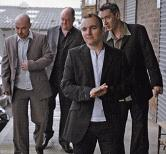

Celtic Lyrics Corner
>
Artists & Groups
> Old Blind Dogs

Old Blind Dogs
Members
:
Rory Campbell, Aaron Jones, Jonny Hardie & Fraser Stone
Albums
:
1992 -
New Tricks
1993 -
Close To The Bone
1994 -
Tall Tails
1995 -
Legacy
1997 -
Five
1999 -
Live
1999 -
The World's Room
2001 -
Fit?
2003 -
The Gab O Mey
2005 -
Play Live
2007 -
Four On The Floor